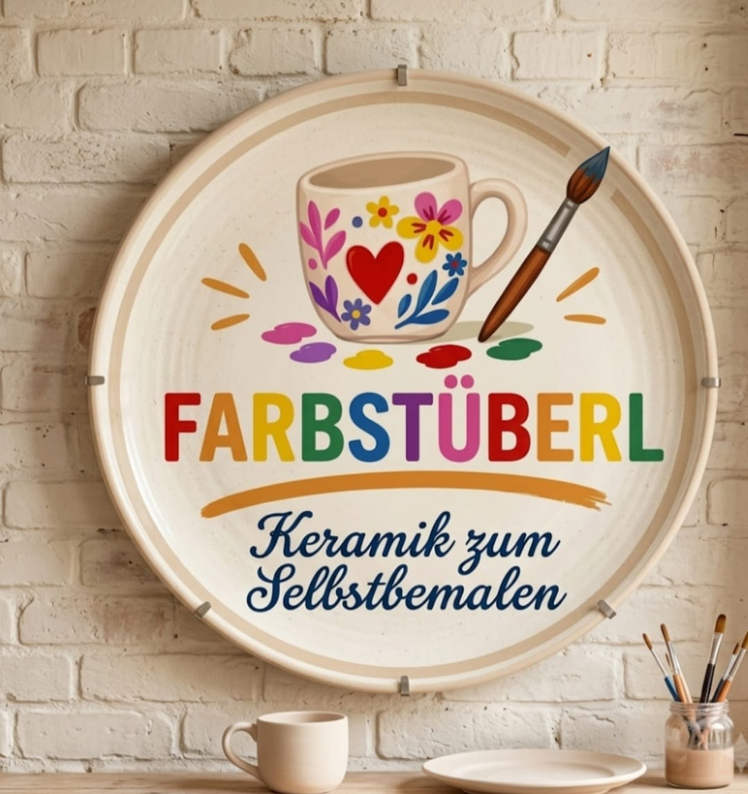

10 Designrichtungen für das Farbstüberl
Die ersten fünf Entwürfe verwenden das bisherige Logo. Die neuen Versionen 6–10 orientieren sich am zweiten Logo mit bunter FARBSTÜBERL-Wortmarke, Tasse, Herz und Pinsel.
1Atelier Warm
Warme Naturtöne, weiche Formen und ein handwerklicher Look, der eng am vorhandenen Logo bleibt.
Version öffnen →2Color Pop
Mutig, bunt und sehr sichtbar. Stark für Geburtstage, JGAs und einen jüngeren Event-Charakter.
Version öffnen →3Galerie Minimal
Ruhiger, hochwertiger Editorial-Look. Das Studio und die Keramik stehen stärker im Mittelpunkt.
Version öffnen →4Night Studio
Dunkel, modern und kontrastreich – eine ungewöhnlichere Richtung mit stärkerem Studiocharakter.
Version öffnen →5Handgemacht
Scrapbook-Optik mit Papier- und DIY-Anmutung. Persönlich, freundlich und bewusst unperfekt.
Version öffnen →Versionen 6–10

6Warm & Einladend
Gemütlich, freundlich und familiär – mit dem neuen bunten Logo.
Version öffnen →7Bunt & Modern
Farbenfroh, lebendig und jung. Das neue Logo wird zum visuellen Mittelpunkt.
Version öffnen →8Minimal & Elegant
Ruhig und hochwertig, damit das farbige Logo besonders klar wirkt.
Version öffnen →9Dunkel & Modern
Atmosphärisch und kontrastreich – das helle runde Logo hebt sich stark ab.
Version öffnen →10Handgemacht & Natürlich
Verspielt, kreativ und persönlich mit Papier- und Ateliercharakter.
Version öffnen →